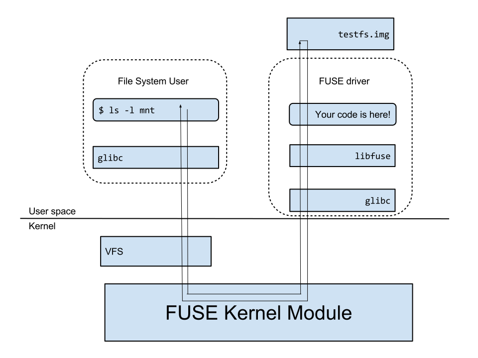
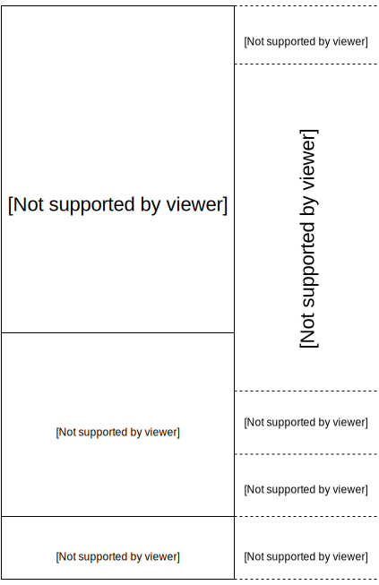

Introduction
In this lab, you will implement (pieces of) a simple disk-based file system. There is not a lot of code to write; instead, a lot of the work of the lab is understanding the system that you’ve been given.
By the end of the lab, you will be able to run your lab 2 ls against this lab’s file system.
Getting Started
You’ll be working on the devbox as usual. From within the devbox, obtain the lab files as follows. We assume that you have set up the upstream as described in the lab setup.
$ cd ~/cs202
$ git fetch upstream
$ git merge upstream/mainThis lab’s files are located in the lab5 subdirectory.
If you have any “conflicts” from lab 4, resolve them before continuing further. Run git push to save your work back to your personal repository.
Below, we describe the software architecture and file system structure for the lab.
FUSE
The file system that we will build is implemented as a user-level process. This file system's storage will be a file (in the example given below, we call it testfs.img) that lives in the normal file system of your devbox. Much of your code will treat this file as if it were a disk.
This entire arrangement (file system implemented in user space with arbitrary choice of storage) is due to software called FUSE (Filesystem in Userspace). In order to really understand what FUSE is doing, we need to take a brief detour to describe VFS. Linux (like Unix) has a layer of kernel software called VFS; conceptually, every file system sits below this layer, and exports a uniform interface to VFS. (You can think of any potential file system as being a "driver" for VFS; VFS asks the software below it to do things like "read", "write", etc.; that software fulfills these requests by interacting with a disk driver, and interpreting the contents of disk blocks.) The purpose of this architecture is to make it relatively easy to plug a new file system into the kernel: the file system writer simply implements the interface that VFS is expecting from it, and the rest of the OS uses the interface that VFS exports to it. In this way, we obtain the usual benefits of pluggability and modularity.
FUSE is just another "VFS driver", but it comes with a twist. Instead of FUSE implementing a disk-based file system (the usual picture), it responds to VFS's requests by asking a user-level process (which is called a "FUSE driver") to respond to it. So the FUSE kernel module is an adapter that speaks "fuse" to a user-level process (and you will be writing your code in this user-level process) and "VFS" to the rest of the kernel.
Meanwhile, a FUSE driver can use whatever implementation it wants. It could store its data in memory, across the network, on Jupiter, whatever. In the setup in this lab, the FUSE driver will interact with a traditional Linux file (as noted above), and pretend that this file is a sector-addressable disk.
The FUSE driver registers a set of callbacks with the FUSE system (via To recap all of the above: the file system user interacts with the file system roughly in this fashion:
|
 |
Here's an example from the staff solution to show what this looks like, where testfs.img is a disk image with only the root directory and the file hello on its file system:
# create a directory to serve as a mount point
$ mkdir mnt
# see what file system mnt is associated with
$ df mnt
Filesystem 1K-blocks Used Available Use% Mounted on
/dev/sda1 7092728 4536616 2172780 68% /
# notice, 'mnt' is empty
$ ls mnt
# mount testfs.img at mnt:
$ build/fsdriver testfs.img mnt
# below, note that mnt's file system is now different
$ df mnt
Filesystem Size Used Avail Use% Mounted on
cs202fs#testfs.img 8.0M 24K 8.0M 1% /home/Vagrant/cs202/lab5/mnt
# and there's the hello file...
$ ls mnt
hello
# ...which we can read with any program
$ cat mnt/hello
Hello, world!
# now unmount mnt
$ fusermount -u mnt
# and its associated file system is back to normal
$ df mnt
Filesystem 1K-blocks Used Available Use% Mounted on
/dev/sda1 7092728 4536616 2172780 68% /
# and hello is gone, but still lives in testfs.img
$ ls mnt
$Note that in the above example, after we run fsdriver, the kernel is actually dispatching the all the open(), read(), readdir(), etc. calls that ls and cat make to our FUSE driver. The FUSE driver takes care of searching for a file when open() is called, reading file data when read() is called, and so on. When fusermount is run, our file system is unmounted from mnt, and then all I/O operations under mnt return to being serviced normally by the kernel.
Our File System
Below, we give an overview of the features that our file system will support; along the way, we review some of the file system concepts that we have studied in class and the reading.
On-Disk File System Structure
Most UNIX file systems divide available disk space into two main types of regions: inode regions and data regions. UNIX file systems assign one inode to each file in the file system; a file's inode holds a file's meta-data (pointers to data blocks, etc.). The data regions are divided into much larger (typically 4KB or more) data blocks, within which the file system stores file data and directory data. Directory entries (the "data" in a directory) contain file names and inode numbers; a file is said to be hard-linked if multiple directory entries in the file system refer to that file's inode. Both files and directories logically consist of a series of data blocks; these blocks can be scattered throughout the disk much as the pages of a process's virtual address space can be scattered throughout physical memory.
Unlike most UNIX file systems, we make a simplification in the layout of the file system: there is only one region on the disk, in which both inode blocks and data blocks reside. Furthermore, each inode is allocated its own disk block instead of being packed alongside other inodes in a single disk block.
Sectors and Blocks
Disk perform reads and writes in units of sectors, which are typically 512 bytes. However, file systems allocate and use disk storage in units of blocks (for example, 4KB, or 8 sectors). Notice the distinction between the two terms: sector size is a property of the disk hardware, whereas block size is a creation of the file system that uses the disk. A file system's block size must be a multiple of the sector size of the underlying disk. As explained in class, there are advantages to making the block size larger than the sector size.
Our file system will use a block size of 4096 bytes.
SuperblocksFile systems typically place important meta-data at reserved, well-known disk blocks (such as the very start of the disk). This meta-data describes properties of the entire file system (block size, disk size, meta-data required to find the root directory, the time the file system was last mounted, the time the file system was last checked for errors, and so on). These special blocks are called superblocks. Many "real" file systems maintain multiple replicas of superblocks, placing them far apart on the disk; that way, if one of them is corrupted or the disk develops a media error in that region, the other replicas remain accessible. Our file system will have a single superblock, which will always be at block 0 on the disk. Its layout is defined by The superblock in our file system contains a reference to a block containing the "root" inode (the |
 |
The Block Bitmap: Managing Free Disk Blocks
In the same way that the kernel must manage the system's physical memory to ensure that a given physical page is used for only one purpose at a time, a file system must manage the blocks of storage on a disk to ensure that a given disk block is used for only one purpose at a time. In WeensyOS, you kept the physical_pageinfo structures for all physical pages in an array, pageinfo, to keep track of the free physical pages in kernel.c. In file systems it is common to keep track of free disk blocks using a bitmap (essentially, an array of bits, one for each resource that is being tracked). A given bit in the bitmap is set if the corresponding block is free, and clear if the corresponding block is in use.
The bitmap in our file system always starts at disk block 1, immediately after the superblock. For simplicity we will reserve enough bitmap blocks to hold one bit for each block in the entire disk, including the blocks containing the superblock and the bitmap itself. We will simply make sure that the bitmap bits corresponding to these special, "reserved" areas of the disk are always clear (marked in-use). Note that, since our file system uses 4096-byte blocks, each bitmap block contains 4096*8=32768 bits, or enough bits to track 32768 disk blocks.
File Metadata
The layout of the meta-data describing a file in our file system is described by struct inode in fs_types.h. This meta-data includes the file's size, type (regular file, directory, symbolic link, etc.), time stamps, permission information, and pointers to the data blocks of the file. Because our file system supports hard links, one inode may be referred to by more than one name -- which is why the inode itself does not store the file "name". Instead, directory entries give names to inodes (as noted earlier).
The i_direct array in struct inode contains space to store the block numbers of the first 10 (N_DIRECT) blocks of the file, which we will call the file's direct blocks. For small files up to 10*4096 = 40KB in size, this means that the block numbers of all of the file's blocks will fit directly within the inode structure itself. For larger files, however, we need a place to hold the rest of the file's block numbers. For any file greater than 40KB, an additional disk block, called the file's indirect block, holds up to 4096/4 = 1024 additional block numbers, pushing the maximum file size up to (10 + 1024)*4096 = 4136KB, or a little over 4MB. The file system also supports double-indirect blocks. A double-indirect block (i_double in the inode structure) stores 4096/4 = 1024 additional indirect block numbers, which themselves each store 1024 additional direct block numbers. This affords an additional 1024*1024*4096 = 4GB worth of data, bringing the maximum file size to a little over 4GB, in theory. To support even larger files, real-world file systems typically support triple-indirect blocks (and sometimes beyond).
Other Features
Our file system supports all the traditional UNIX notions of file ownership, permissions, hard and symbolic links, time stamps, and special device files. Perhaps surprisingly, much of this functionality will come for free (or very low cost) after writing just a small number of core file system operations. Some of the ease in supporting these traditional UNIX file system notions comes from FUSE.
Goal
You will implement some components of the FUSE driver (and hence the file system): allocating disk blocks, mapping file offsets to disk blocks, and freeing disk blocks allocated in inodes. In order to do this, you will have to familiarize yourself with the provided code and the various file system interfaces.
Source files
bitmap.c,bitmap.h: operations for manipulating the free disk block bitmap.dir.c,dir.h: operations for manipulating directories, including adding entries to directories and walking the directory structure on-disk to access a file.fs_types.h: contains structure and macro definitions relevant to the layout of the file system.inode.c,inode.h: operations for reading and writing data to inodes on-disk.disk_map.c,disk_map.h: contains theflush_block()anddiskaddr()functions, both of which are vital for the functions that you will write.fsdriver.c: the main source file for the file system driver.fsformat.c: the main source file for the file system formatting utility.
The main file system code that we've provided for you resides in fsdriver.c. This file contains all the FUSE callbacks to handle I/O syscalls, as well as the main function. Once the path to the disk image and the path to the mount point (testfs.img and mnt respectively in the supplied example) have been read from the command line arguments, our FUSE driver uses mmap() to map the specified disk image into memory. This happens in the map_disk_image function (defined in disk_map.c), which itself initializes some file system metadata. Then, fsdriver.c calls fuse_main, which handles kernel dispatches to our registered callbacks. These callbacks will invoke the functions that you write in the coming exercises.
As stated in class, mmap reserves a portion of the running process's virtual address space to provide read and write access to a file as if that file were an array in memory. For example, if file is a pointer to the first byte of a memory-mapped file, writing ((char *)file)[5] = 3 is approximately equivalent to the two calls lseek(fd, 5, SEEK_SET) and then write(fd, <location of memory that holds byte 3>, 1). To flush any in-memory changes you've made to a file onto the disk, you would use the msync function. As always, you can check the man pages for more information on these syscalls. For this lab, you will not need to be intimately familiar with their operation, but you should have a high-level understanding of what they do.
Heads up: some key tips for the lab.
It’s virtually impossible to do this lab correctly without reading the supplied code and specs carefully. This includes comments, programming idioms in the supplied code, specs of functions that you are supposed to call, specs of functions that you are supposed to write, and more.
Expanding on the prior point: if you’re not sure how to do something, look around in the same file for how other functions are implemented in the supplied code; this will give you programming hints.
As usual, bugs in earlier exercises may show up only in later exercises, or in later grading tests.
Finally, you will very likely need to use the debugger (
gdb). We include instructions below on running the driver undergdb; for gdb-specific commands, such as breakpoint-setting, please see lab 1.
The work
Exercise 1. Before coding in the driver, run ./chmod-walk in the Lab 5 directory. This will set up permissions in the directories leading up to your lab directory correctly so that you will be able to run the driver successfully. (If you do not run this script, FUSE will be unable to mount or unmount file systems in your lab directory.)
When you run the FUSE driver ($ build/fsdriver testfs.img mnt), the function map_disk_image will set the bitmap pointer. After this, we can treat bitmap as a packed array of bits, one for each block on the disk. See, for example, block_is_free, which simply checks whether a given block is marked free in the bitmap.
Exercise 2. Implement alloc_block in bitmap.c. It should find a free disk block in the bitmap, mark it used, and return the number of that block. When you allocate a block, you should immediately flush the changed bitmap block to disk with flush_block, to help file system consistency. Under the hood, flush_block calls msync to schedule the disk block in memory to get flushed to the actual disk image.
Note: You should use free_block as a model.
Use make grade to test your code. Your code should now pass the "alloc_block" test.
Debugging
The output of our make grade will usually not provide you with enough information to debug a problem. Here are some debugging guidelines.
When the grading script fails, look at the scripts in test/ to see what is actually happening. Some of the tests are in the fs_test() function in fsdriver.c. Others are invoked by separate C programs. For debugging, you will need to identify which test or test program is causing the failure; this isn’t a matter of using gdb but rather of doing detective work on the grading script and the supplied code.
Also, “Transport endpoint is not connected” and “Software caused connection abort” are errors that user programs see when the file system driver panics or otherwise crashes and is no longer handling system calls (open(), read(), etc.) for that mount point. So, when a program starts spouting these errors (for example, from a grading script), you will need to run the driver in gdb to see where it’s panicking.
Here is a quick howto:
Running the driver in gdb:
In one window:
$ gdb build/fsdriver
<set breakpoints, as usual>
(gdb) run -d testfs.img mnt Then in another window:
# manually run anything driven from the test/ directory.
# for example:
$ build/posixio
# or
$ build/stressfsNote that you can also run these programs in gdb.
Printf debugging:
You may prefer “printf debugging” (though gdb is likely to be more effective for this lab). For that purpose, you can run the driver “standalone” like this:
$ build/fsdriver -d testfs.img mntThis command runs the driver in debugging mode and mounts testfs.img at mnt. In debugging mode, the driver does not exit until you press Ctrl-C. This means that you cannot interact with the file system via the terminal containing the command above; instead, you will need to open up a new terminal and interact with the file system from there. While in debugging mode, fsdriver will print to the console a trace of the syscalls dispatched to the driver; any printfs that you inserted in the driver will also be displayed. Once you run the command above, you should see something like:
FUSE library version: 2.9.2
nullpath_ok: 0
nopath: 0
utime_omit_ok: 0
unique: 1, opcode: INIT (26), nodeid: 0, insize: 56, pid: 0
INIT: 7.23
flags=0x0003f7fb
max_readahead=0x00020000
INIT: 7.19
flags=0x00000011
max_readahead=0x00020000
max_write=0x00020000
max_background=0
congestion_threshold=0
unique: 1, success, outsize: 40
...Now, open up a new terminal, and interact with the file system to see the debugging outputs. Something like:
$ ls mnt should cause the original terminal to print germane output.
You can also run the test programs as well, either in gdb (to help you synchronize calls from file system users to your drive) or standalone.
A few other things to keep in mind:
Before any of the above commands work, you will need to create a disk image to use for testing. The easiest way to do this is to run
test/testbasic.bash. As a side effect, this creates a disk image,testfs.img, which is set up properly for the internal tests in the driver.It may be useful to run basic tests on the driver. To that end, run:
$ build/fsdriver testfs.img mnt --test-ops
The command above runs the internal file system tests and then exits.
Cleaning up. During the course of testing your FUSE driver, various combinations of operations may cause your FUSE driver to stop functioning or enter a non-clean state. It may be helpful to search Piazza for information about specific error messages.
More generally, to get your system to a clean starting state, you can do:
$ fusermount -u mnt # unmount the driver
$ test/makeimage.bash # make a clean testfs.img
$ rm -rf mnt # remove the mounting directory and its residents
$ mkdir mnt # recreate the mounting directoryYou may wish to encapsulate these actions in a shell script.
Once you have executed the above lines, you start the driver again with:
$ build/fsdriver -d testfs.img mntFile Operations
We have provided various functions in dir.c and inode.c to implement the basic facilities you will need to interpret and manage inode structures, scan and manage the entries of directories, and walk the file system from the root to resolve an absolute pathname. Read through all of the code in these files and make sure you understand what each function does before proceeding.
Exercise 3. Implement inode_block_walk and inode_get_block in inode.c.
These are the workhorses of the file system. For example, inode_read and inode_write aren’t much more than the bookkeeping atop inode_get_block necessary to copy bytes between scattered blocks and a sequential buffer.
Their signatures are:
int inode_block_walk(struct inode *ino, uint32_t filebno, uint32_t **ppdiskbno, bool alloc);
int inode_get_block(struct inode *ino, uint32_t filebno, char **blk);inode_block_walk has similar logic to the virtual memory lookup function in lab4. It finds the disk block number slot for the 'filebno'th block in inode 'ino', and sets '*ppdiskbno' to point to that slot. inode_get_block goes one step further and sets *blk to the start of the block, such that by using *blk, we can access the contents of the block. It also allocates a new block if necessary.
The pointers-to-pointers may be confusing. It’s best to draw pictures, or look at other code in inode.c, or think about how to call the function. Also, as a reminder: in C, when we want to return multiple values from a function (or return one value, in a function returning an int status code), we set up the function to take a pointer (address) as a parameter, and we put the return value in the supplied address (by dereferencing the pointer). As an example, if we have a function f(int* p), the implementation of f can return an int to the caller by storing into (dereferencing) the supplied address, with a line like *p = 5. This identical pattern holds when the return value is itself a pointer. In our example, the return value is an uint32_t* (an address whose contents will be a 32-bit block number). So, the caller passes storage for that uint32_t*: an uint32_t**.
Use make grade to test your code. Your code should pass the "inode_open" and "inode_get_block" tests.
After Exercise 3, you should be able to read and write to the file system. Try something like
$ echo "hello" > "mnt/world"; cat "mnt/world"Exercise 4. Implement inode_truncate_blocks in inode.c. inode_truncate_blocks frees data and metadata blocks that an inode allocated but no longer needs. This function is used, for instance, when an inode is deleted; the space reserved by the inode must be freed so that other files can be created on the system.
Use make grade to test your code. Your code should pass the "inode_flush/inode_truncate/file rewrite" tests.
Exercise 5. Implement inode_link and inode_unlink in inode.c. inode_link links an inode referenced by one path to another location, and inode_unlink removes a reference to an inode at a specified path. Make sure that you properly increment the link count in an inode when linking and decrement the link count when unlinking. Don't forget to free an inode when its link count reaches zero!
inode_link and inode_unlink allow us to exploit the level of indirection provided by using inodes in our file system (as opposed to storing all file meta-data inside of directories, for instance) and manage referencing inodes with multiple names. The inode_unlink operation is particularly important as it allows us to release the space reserved for an inode, acting as a "remove" operation when an inode's link count is one.
Use make grade to test your code. Your code should pass the "inode_link/inode_unlink" tests.
After Exercise 5, you should be able to make hard links. Try something like
$ echo "hello" > "mnt/world"; ln "mnt/world" "mnt/hello"; rm "mnt/world"; cat "mnt/hello"The tests after "inode_link/inode_unlink" are all effectively stress tests, in some way or another, for the driver. Each of them relies on the core functionality that you implemented; some can fail if you didn't handle certain edge cases correctly. If you fail one of these tests, go back and check the logic in your code to make sure you didn't miss anything.
Exercise 6. Run your ls from lab 2 against the file system in mnt. Paste the output of
$ /path/to/your/ls -alR mntinto answers.txt. If you have a non-working lab 2, then just note that in the answers.txt file.
You can have fun – not graded – using the fact that you are writing both ls and implementing the file system. For example, you could consider having your file system stuff coded messages in extraneous dirents, and then interpret/decode them in ls.
Extra credit questions
Do either of the following for extra credit (you can do both, but extra credit is given for only one). As in lab4, the points given will not be commensurate with effort required.
Exercise 7. The file system is likely to be corrupted if it gets interrupted in the middle of an operation (for example, by a crash or a reboot). Implement soft updates or journalling to make the file system crash-resilient and demonstrate some situation where the old file system would get corrupted, but yours doesn't.
Exercise 8. Currently, our file system allocates one block (4096 bytes) per inode. However, each struct inode only takes up 98 bytes. If we were clever with file system design, we could store 4096/96 = 41 inodes in every block. Modify the file system so that inodes are stored more compactly on disk. You may want to make the file system more like a traditional UNIX file system by splitting up the disk into inode and data regions, so that it is easier to reference inodes by an index (generally called an "inum" for "inode number") into the inode region.
Further questions
Answer the following questions in answers.txt.
- How long approximately did it take you to do this lab?
- Do you feel like you gained an understanding of how to build a file system in this lab? Please suggest improvements.
Submission
Handing in consists of three steps:
Executing this checklist:
- Make sure your code builds, with no compiler warnings.
- Make sure you’ve used
git addto add any files that you’ve created. - Fill out the top of the
answers.txtfile, including your name and NYU Id - Make sure you’ve answered every question in
answers.txt - Make sure you have answered all code exercises in the files.
- Create a file called
slack.txtnoting how many slack days you have used for this assignment. (This is to help us agree on the number that you have used.) Include this file even if you didn’t use any slack days. git addand commit the slack.txt file
Push your code to GitHub, so we have it:
$ cd ~/cs202/lab5 $ make clean $ git commit -am "hand in lab5" $ git push origin Counting objects: ... .... To git@github.com:nyu-cs202/labs-21fa-<YourGithubUsername>.git 7337116..ceed758 main -> mainActually submit, by timestamping and identifying your pushed code:
- Decide which git commit you want us to grade, and copy its id (you will paste it in the next sub-step). A commit id is a 40-character hexadecimal string. Usually the commit id that you want will be the one that you created last. The easiest way to obtain the commit id for the last commit is by running the command
git log -1 --format=oneline. This prints both the commit id and the initial line of the commit message. If you want to submit a previous commit, there are multiple ways to get the commit id for an earlier commit. One way is to use the toolgitk. Another isgit log -p, as explained here, orgit show. - Now go to NYU Brightspace; there will be an entry for this lab. Paste only the commit id that you just copied.
- You can submit as many times as you want; we will grade the last commit id submitted to Brightspace.
- Decide which git commit you want us to grade, and copy its id (you will paste it in the next sub-step). A commit id is a 40-character hexadecimal string. Usually the commit id that you want will be the one that you created last. The easiest way to obtain the commit id for the last commit is by running the command
NOTE: Ground truth is what and when you submitted to Brightspace. Thus, a non-existent commit id in Brightspace means that you have not submitted the lab, regardless of what you have pushed to GitHub. And, the time of your submission for the purposes of tracking lateness is the time when you upload the id to Brightspace, not the time when you executed git commit.
This completes the lab.
Acknowledgements
The diagram explaining FUSE is adapted from the diagram displayed on FUSE's homepage.
This lab is an edited version of a lab written by Isami Romanowski. (He in turn adapted code from MIT's JOS, porting it to the FUSE and Linux environment, adding inodes and more.)